Acantha

Acturus

AlMare

Alpha
Antara
Arrin
Ashia
Athorn
Atietis
Atlantis
Blackspire
Brightfall
Burin
Castor
Cerberus
Charon
Corus
Danae
DaRiln
Eulis
Euphini
Freya
GeTorin
Helios
Hjorden
Hypherion
Khoros
Krisenda
Mria

Norayne
Oberon
Phinmor
Poseidon
Promethean
Reema
Rhea
Sumri
Tethys
Tilminra
Tiridian
Titan
Triton
Tyr
Vesper Point
Vilnara
Waypoint 33
Waypoint 46
Waypoint 52
Waypoint 60
Waypoint 89